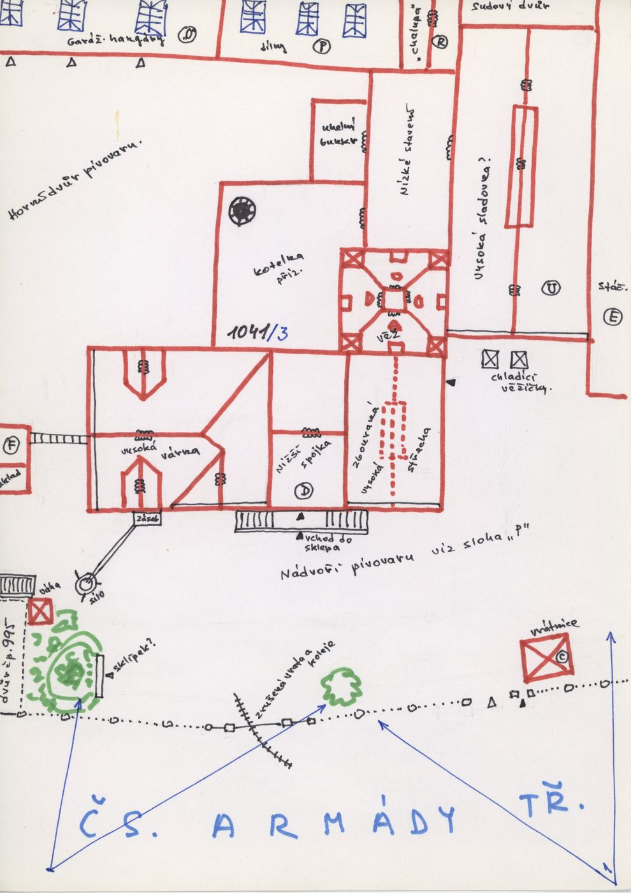
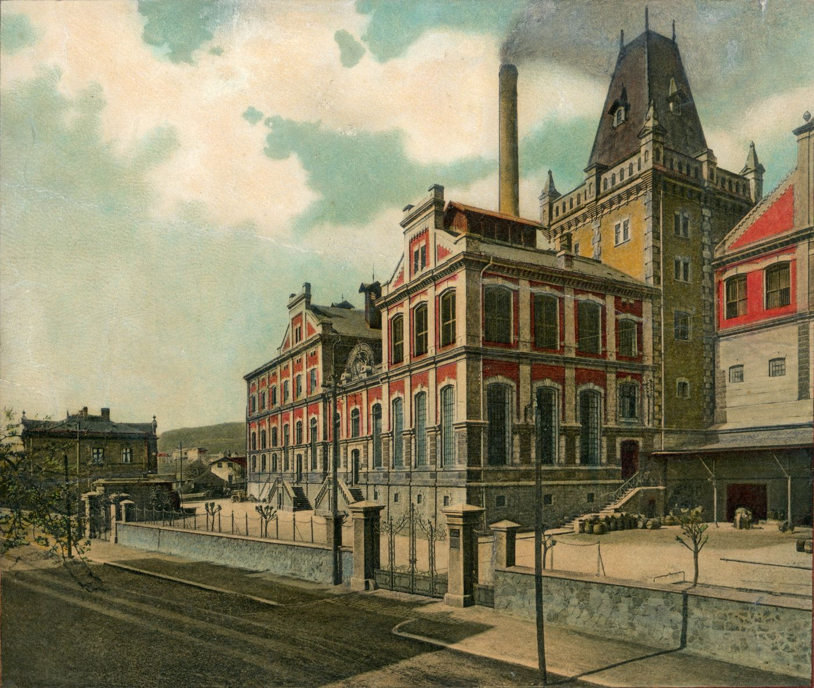
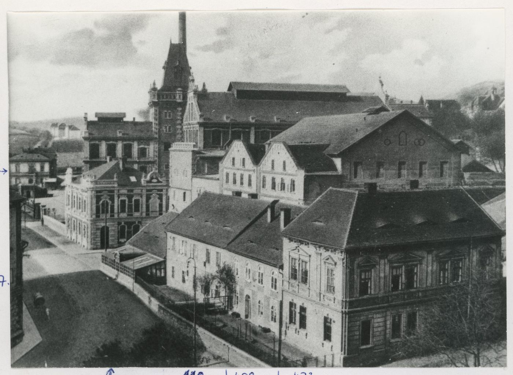
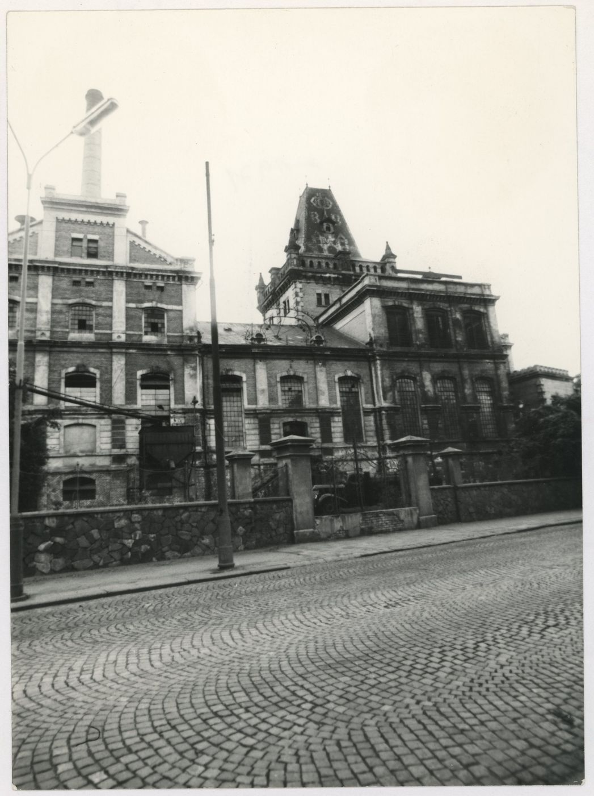
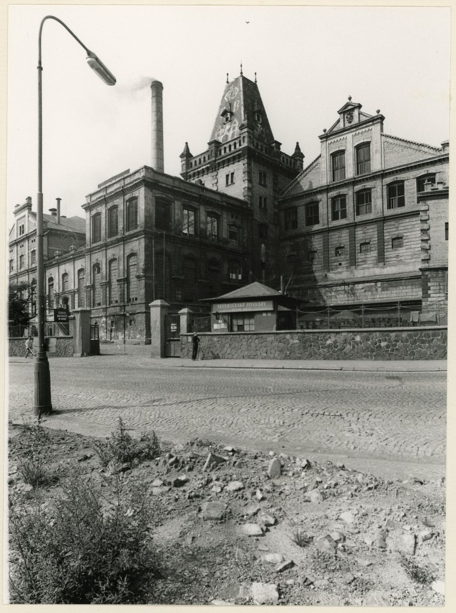
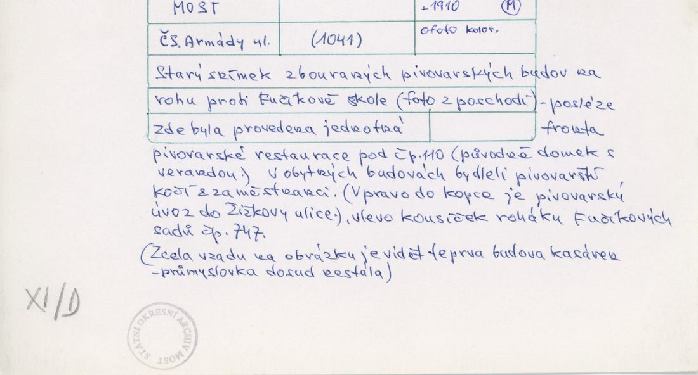
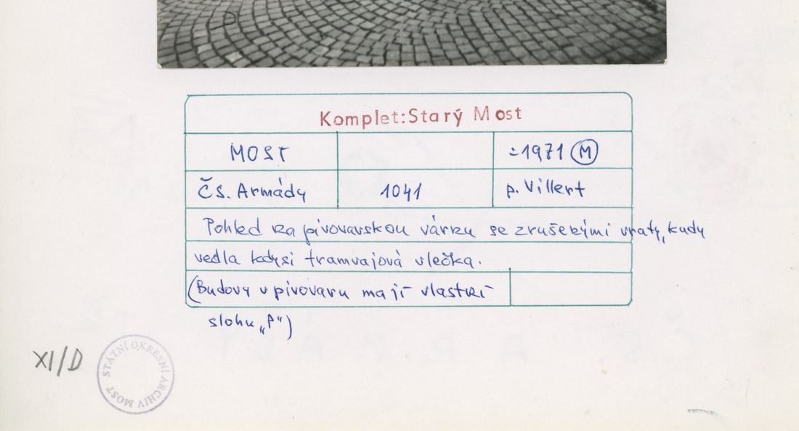
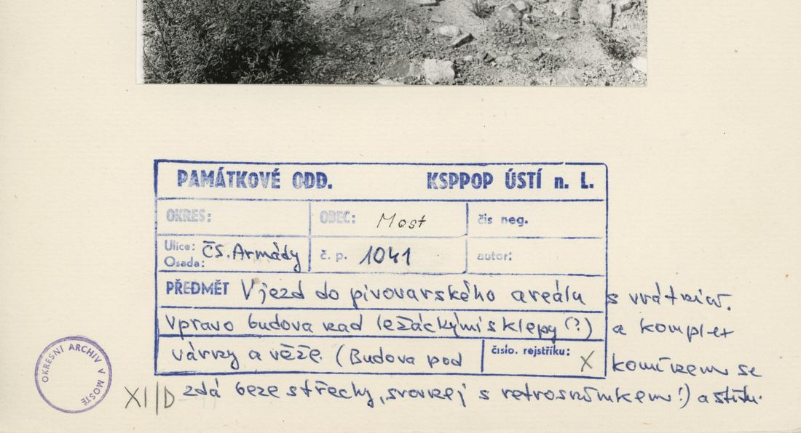
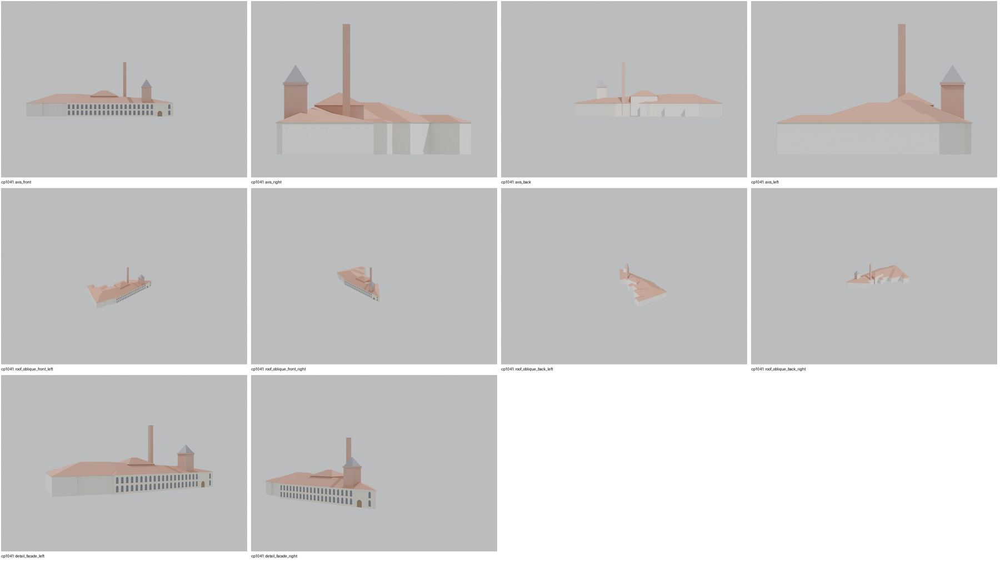
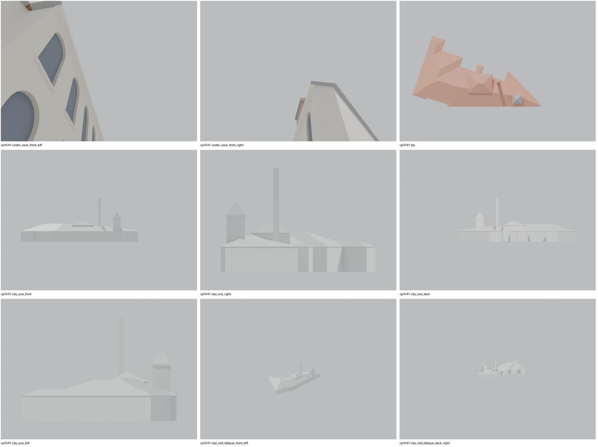

Identita domu
Areál pivovaru (Severočeské pivovary): cihlové stáčírny/varna, věž s cimbuřím a jehlancovou střechou, komín, vstupní brána s vrátnicí od ČSA. Foto cp_1041_001 (podle karty starý snímek zbořených pivovarských budov na rohu proti Fučíkově škole, ne pohled na areál), FOTO-000149 (kolorovaná pohlednice průčelí do ČSA), cp_1041_002/003 (ulice 1960s: kamenná ohradní zeď, brána, věž). Plán cp_1041_002 ověřuje polohu věže a halu stáčírny.
Použité prameny: cp_1041_002 PLANE; cp_1041_001/002/003 PHOTO; FOTO-000149/150.
GIS: GIS id 1504 (3942 m², 19 vrcholů) „Brauerei“. V oblasti „Cs_Armady“ je dům veden podruhé se stejnými přílohami.
Prameny (9 příloh)
Všechny přílohy domu v databázi Libuše, každá otevřená a zapsaná v plan_search.json. Stav rešerše plánů: found; situační/střešní náčrt (ruční, nekótovaný, PLANE,BW) – není stavební výkres; půdorysné rozměry z GIS nebo odhad. Kliknutím otevřete větší náhled.


situační náčrt
SHA-256 5f59aeda5576…


fotografie
SHA-256 0fea7d5763b4…

fotografie
SHA-256 6e26ed1120db…


fotografie
SHA-256 41a8524bd3cc…


fotografie
SHA-256 e04a2414a2c2…


fotografie
SHA-256 05e463a98282…


archivní karta (rub) · výřez textu
SHA-256 29df7bbd5642…


archivní karta (rub) · výřez textu
SHA-256 7eb03e4de781…


archivní karta (rub) · výřez textu
SHA-256 05accf9d8408…
Model
| Revize modelu | r4 (zachované revize: r1, r2, r4) |
|---|---|
| Poloha | GIS půdorys id 1504 |
| Šířka průčelí | 88,00 m |
| Výška okapu | 11,00 m (odhad) |
| Podlaží | 3 |
| Střecha podle pramenů | složená; věž s jehlanem |
| Střecha v modelu | valbová nad nepravidelným půdorysem (přímá kostra) |
| Otvory | 45 |
| Vikýře / vedlejší hmoty | 0 / 2 |
| Polygonů | 1645 |
Zdroje rozměrů, jak jsou zapsány v plánu modelu
| Rozměry | GIS id 1504 polygon 88 m street front |
|---|---|
| Průčelí | postcard FOTO-000149 + photos cp_1041_002/003: unified brick bottling facade with tall arched windows, tower with pyramid roof and crenellation, chimney; sketch cp_1041_002 |
| Střecha | massing hypothesis |
Kontrola r4: brána geometrie a 19 pohledů
Automatická brána (uzavřené podkroví, krytí střechou, UV, síť, počty otvorů proti fotografii s rámečkem) a 19 renderů: čtyři osy, čtyři šikmé pohledy na střechu, dva detaily průčelí, dva pohledy pod přední okap, pohled shora a šest pohledů bez barev materiálů. Stav: blokováno.


Nálezy a opravy
- hmotový model: uliční průčelí 88 m s 2×21 okny odporuje pohlednici FOTO-000149 (nádvoří, hala se 4 osami u věže, štítové křídlo vlevo)
- geometrie uzavřená, bez škvír
- oprava pramene: cp_1041_001 není letecký pohled na areál, ale starý snímek zbořených budov na rohu proti Fučíkově škole (karta); polohy věže a varny v r2 z něj proto nevycházejí
Revize r4: doklad fasád a změny
Okna a dveře se počítají na fotografii s červeným rámečkem po dělicích zdech domu. Řádky oken jsou zdola nahoru; „hypotéza“ jsou otvory, které na snímku vidět nejsou.
| Fasáda | Okna po podlažích | Hypotéza (id otvorů) | Poznámka |
|---|---|---|---|
| main | – + dveře 1 | G1, G2, G3, G4, G5, G6, G7, G8, G9, G10, G11, G12, G13, G14, G15, G16, G17, G18, G19, G20, G21, U1, U2, U3, U4, U5, U6, U7, U8, U9, U10, U11, U12, U13, U14, U15, U16, U17, U18, U19, U20, U21 | HMOTOVÝ MODEL: pohlednice ukazuje areál za nádvořím s plotem a branou – halu se 4 vysokými obloukovými osami ve 2 řadách vedle věže, vlevo třípodlažní štítové křídlo, vpravo další křídla; jednotné průčelí 88 m s 2×21 okny neodpovídá a je hypotézou |
Pro tento dům není fotografie, na které by šlo fasádu spolehlivě vyznačit.
Změny proti r2/r3
- closed attic, eave closures, gables along the roof underside, flat-roof covering slab, names for tools/most_qa (z4_post.py)
- facade evidence declared (massing model, openings hypothesis, critical finding recorded)
- source correction: the card of cp_1041_001 describes an old photo of demolished brewery buildings at the corner opposite the Fučík school (later the unified front of restaurant 110), not an aerial view of the complex; r2 used it for tower/brewhouse positions, which are therefore unsupported
Hypotézy
Vše níže je model_hypothesis, provisional, locked: false.
- hmotový model: hlavní hala + varna + věž jako hypotéza rozložení výšek
- věž umístěna u uličního průčelí podle pohlednice
- detaily fasád (cihlové pilastry, štíty) jen schematicky
- tower/brewhouse/chimney positions inside the GIS footprint estimated from the aerial photo cp_1041_001
- skeleton roof over the whole footprint is a stand-in for several hall roofs
- all storey heights, opening sizes and roof pitches are estimates from photographs (model_hypothesis, provisional, locked=false)
Soubory
- Model čp. 1041, GLB
- Pracovní složka: F:\MOST\output\zatecka_street_claude_2026-10-17\houses\cp1041\
plan_search.json,geometry_plan.json,README.md,texture_handoff_spec.json,r4/cp_1041_G_r4.blend,r4/qa/qa_review.json, rámečkyframes/cp1041_*